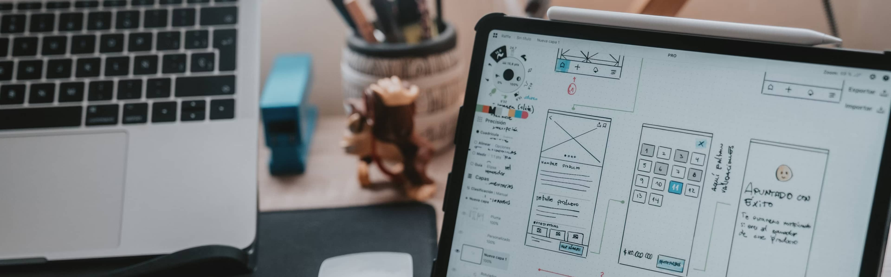

I’m currently studying at Universiti Malaysia Sarawak, with hobbies that include digital illustration, exploring new design tools, and discovering inspiring visual styles online.
The driving force behind my design work is a deep passion for creating meaningful and engaging digital experiences. As a Multimedia Computing student, I enjoy blending creativity with technology, exploring how visuals, interactivity, and storytelling can come together to communicate ideas effectively. I am fascinated by user-centered design and always strive to craft solutions that are both functional and visually appealing. From interactive web applications to motion graphics and 3D modeling, I seek opportunities to experiment, learn, and push the boundaries of my skills. Beyond technical expertise, I value creativity, problem-solving, and continuous growth. My ultimate goal is to design experiences that inspire, connect, and leave a lasting impact.